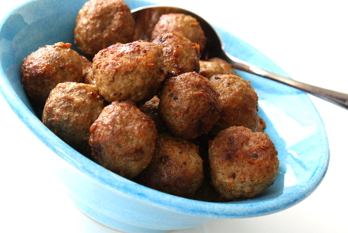

For mached potatoes
Mix bread and cream. Let swell 10 min. Add the fries, onions, eggs, salt and pepper. Stir to a smooth smear. Form the batter to even buns. Fry them in butter and rapeseed oil on medium 3-5 minutes. Peel the potatoes and cut into pieces. Boil the soft in lightly salted water for 10-15 minutes. Pour the water and squeeze the potatoes through puree or mash with a shock directly in the saucepan. Heat the milk and cream and stir in the potatoes. Seasoning with salt and pepper. Stir the mash airily.

Comments
2017-06-10 Ben says: Love this recipe, but I admit I now add about 3 cloves of garlic, because I love garlic. Not for everyone's taste
2017-06-10 Karolina says: Best ever!!!!